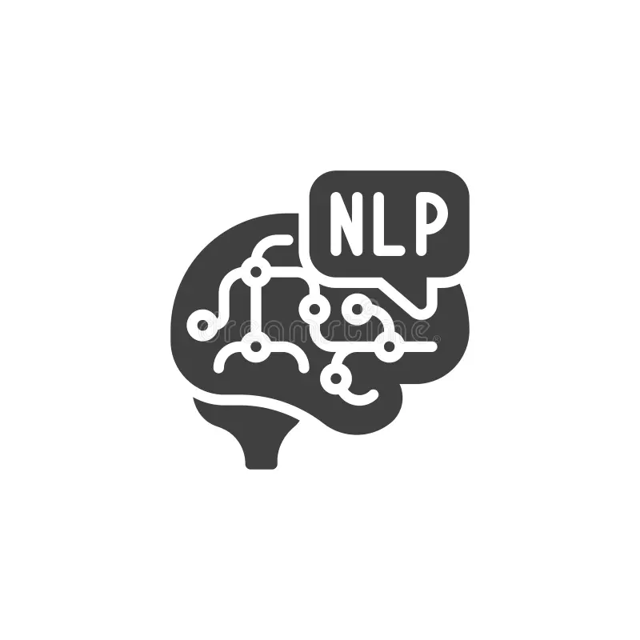
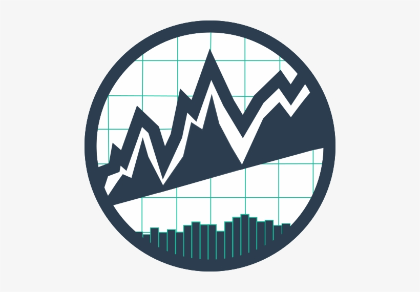
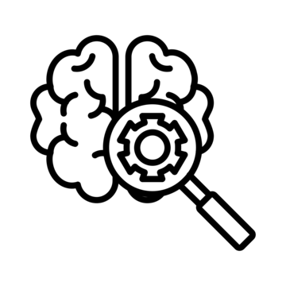

Simpsons-DaVinci
Proyecto basado en deep learning que combina autoencoders y redes generativas adversarias (GANs) para generar imágenes sintéticas de personajes de Los Simpsons en formato 64x64 píxeles. El objetivo es explorar técnicas de generación de datos y entender cómo los modelos pueden aprender a recrear estilos visuales a partir de un dataset de imágenes.
 Deep Learning
Deep Learning PyTorch
PyTorch Image Processing
Image Processing
News2Stock
Proyecto de análisis de datos a gran escala utilizando el dataset de noticias y su impacto en el mercado de valores. Incluye técnicas de procesamiento de lenguaje natural (NLP) para extraer información relevante de los artículos de noticias y su correlación con los movimientos del mercado. Además, incluye también análisis de series temporales y generación de embeddings de las mismas para mejorar la precisión del modelo. El objetivo es desarrollar un modelo predictivo que ayude a los inversores a tomar decisiones informadas.
- NLP
- Time Series Analysis
- Financial Analysis

Proyecto de machine learning enfocado en predecir la probabilidad de impago de clientes a partir del dataset Credit Default Risk de Kaggle. Incluye un proceso completo de análisis exploratorio, ingeniería de características y entrenamiento de modelos supervisados (árboles de decisión, gradient boosting y redes neuronales). El objetivo es mejorar la capacidad de las entidades financieras para gestionar el riesgo crediticio y tomar decisiones más informadas.
 Data Science
Data Science Machine Learning
Machine Learning Sklearn, Pandas, ...
Sklearn, Pandas, ...
Proyecto de detección de frutas en imágenes utilizando técnicas de computer vision y shallow learning. Emplea algoritmos para la extracción de características visuales y un modelo Random Forest para clasificar diferentes tipos de frutas.
- Computer Vision
- Shallow Learning
- Image Processing